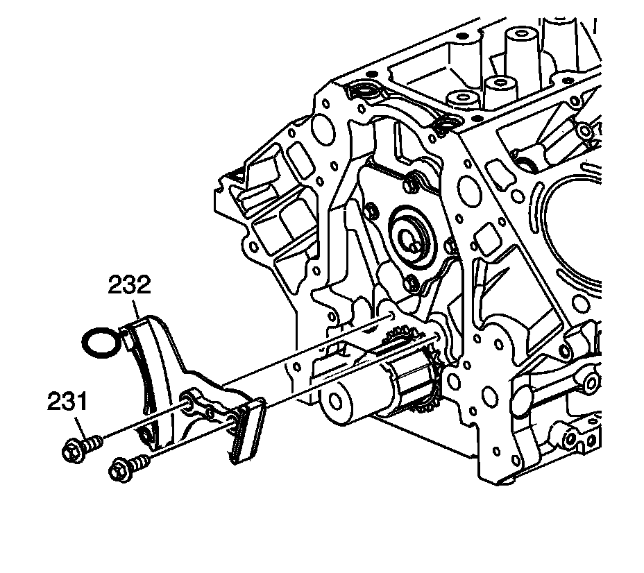

Operation CHARM
: Car repair manuals for everyone.
Home
>>
Cadillac
>>
2007
>>
Escalade ESV AWD V8-6.2L
>>
Repair and Diagnosis
>>
Engine, Cooling and Exhaust
>>
Engine
>>
Timing Components
>>
Timing Chain Tensioner
>>
Specifications
Timing Chain Tensioner: Specifications

Install the
timing chain tensioner
(232) and bolts (231).
Tighten the bolts to 25 N.m (18 lb ft).